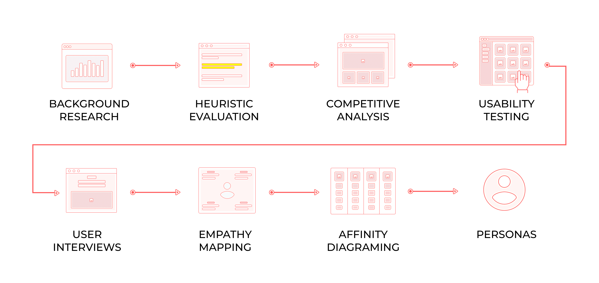
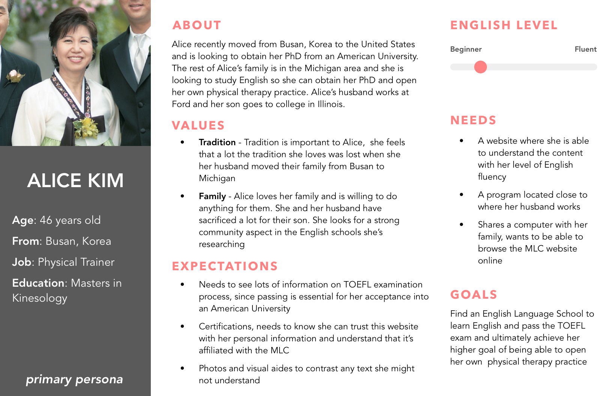
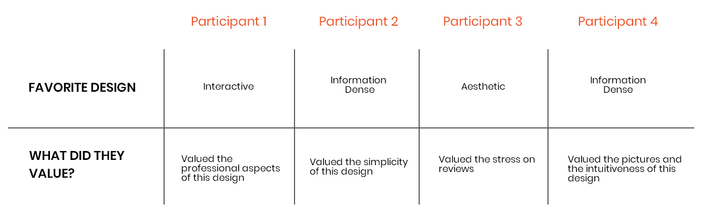

Michigan Language Center (MLC): 웹 경험 개선
UX Research + Web Design + Cultural Usability
Overview
Brief
미시간 언어 센터 (MLC) 프로젝트는 영어 비원어민 사용자가 웹사이트를 탐색할 때의 사용자 경험을 향상시키는 것을 목표로 합니다. 이 프로젝트는 문화적 차이를 고려하고 효과적인 커뮤니케이션에 중점을 두어 랜딩 페이지에서 메인 사이트로 자연스럽게 전환할 수 있도록 개선하고자 합니다. 특히, 한국인들을 대상으로 한국어 랜딩 페이지를 설계하여 한국 수강생들을 늘리고 원활하고 직관적인 사용자 경험을 보장하고자 합니다.
Duration
Sept 2018 - May 2019
Role
UX Researcher, UI/UX Designer
Skills
- Background Research
- Heuristics Evaluations
- Competitive Analysis
- User Interviews
- Usability Testing
- Empathy Mapping
- Affinity Diagramming
- Personas & Scenarios
- Digital Prototyping
Tools
- Sketch
- InVision
- Figma
- Adobe Illustrator
- Adobe Photoshop
Executive Summary
더 나은 소통을 통해 지원 커뮤니티 구축
MLC의 사명은 전 세계 사람들에게 영어와 미국 문화를 가르치고 대학, 진로, 개인적인 활동에 역량을 부여하는 것입니다. MLC의 웹사이트는 예비 수강생들에게 뛰어난 ESL 프로그램을 알리는 중요한 접점입니다. MLC의 예비 수강생들은 대부분 비원어민이라는 점을 고려할 때, 다양한 언어와 문화권에서 효과적으로 소통하는 것은 어려운 일입니다. 이 프로젝트는 문화적 차이가 웹 사용자 경험에 어떻게 영향을 미치는지, MLC의 사이트가 원활한 사용자 경험을 유지하면서 전 세계 사용자들을 수용할 수 있는 방법을 이해하고자 합니다. 올해는 특히 그들의 대외 홍보를 지원하기 위해 전문 랜딩 페이지에 집중하고 한국어 랜딩 페이지를 설계했습니다.
Project Goals
한국어 사용 학생들의 사용자 경험 향상
1. 한국에 거주하는 학생들의 온라인 지원 건수를 증가시킵니다.
2. 대상 사용자 그룹으로부터 프로토타입 디자인과 경험에 대한 긍정적인 평가를 얻습니다.
3. 한국어 랜딩 페이지에서 메인 웹사이트로 이동할 때 더욱 원활한 사용자 경험을 제공합니다.
4. MLC의 메인 웹사이트와 한국어 랜딩 페이지 설계에 문화적 특성을 반영합니다.
Research
문화적 특성과 사용성 이해
문화적 맥락이 웹 디자인에 어떤 영향을 미치는지 이해하기 위해 광범위한 연구를 수행했습니다, 여기에는 문헌 검토, 사용자 인터뷰, 사용성 테스트가 포함되었습니다.
문헌 검토 (Literature Review)
문화의 차원화를 위한 Geert Hofstede의 모델을 포함하여 웹/UI 디자인에서 국제적 사용성과 문화적 맥락에 대한 학술 연구를 검토했습니다.
사용자 인터뷰 (User Interviews)
튀르키예, 한국, 사우디아라비아 출신의 MLC 학생들과 인터뷰를 진행해 그들의 배경, MLC를 알게 된 경로, MLC 웹사이트에서의 경험을 조사했습니다.
사용성 테스트 (Usability Testing)
사용성 테스트를 통해 내비게이션의 어려움, 번역 오류, 랜딩 페이지에서 더 흥미로운 콘텐츠의 필요성 등 MLC 웹사이트의 주요 문제를 발견했습니다.
Insight 1
문화적 차이가 웹 디자인에 큰 영향을 미칩니다
디자인 원칙과 사용자 기대는 문화마다 다르며 레이아웃, 기호, 콘텐츠 구조, 내비게이션에 영향을 미칩니다. 이를 고려한 설계는 더 나은 사용자 경험을 제공하는 데 필수적입니다.
Insight 2
언어별 랜딩 페이지는 리드 생성에 효과적입니다
MLC의 기존 언어별 랜딩 페이지는 리드 생성에 효과적이었지만 원활한 사용자 경험을 위해 메인 웹사이트와의 통합이 더 필요합니다.
Insight 3
사용자 피드백은 개선 영역을 강조합니다
인터뷰와 사용성 테스트를 통해 내비게이션 문제, 번역 오류, 그리고 더 흥미롭고 상세한 콘텐츠의 필요성이 드러났습니다.
Problem Statement
랜딩 페이지에서 메인 웹사이트로의 전환 개선
MLC는 다양한 언어에 맞춘 전문 랜딩 페이지를 제작해 효과적으로 리드를 생성하고 있습니다. 그러나 이 페이지들은 기본적인 정보만 제공하며, 더 많은 세부 사항을 위해 메인 웹사이트로 연결됩니다. 이는 콘텐츠와 기능을 재고하여 랜딩 페이지에서 메인 웹사이트로의 전환 경험을 개선할 기회를 제공합니다.
Personas
사용자의 요구를 충족시키기 위해 세 가지 디자인 스타일을 개발했습니다
Primary Persona: 한국인 예비 수강생
MLC의 '대학 경로'에 대한 명확한 설명, 한국어 랜딩 페이지에서의 원활한 전환, 그리고 전문적인 디자인이 필요합니다.
Secondary Persona: 한국 교육 에이전트
영어 프로그램, 수업 커리큘럼 및 사회 참여 학습 기회에 대한 정보가 필요합니다.

Design Themes
사용자 요구를 해결하기 위한 세 가지 디자인 스타일 개발
정보 밀집형 (Information Dense)
모든 정보를 한 페이지에 통합하여 사용자들이 쉽게 탐색할 수 있도록 구성.
시각/미학 중심형 (Visual/Aesthetic)
번역 부담을 줄이기 위해 시각적 요소를 활용하여 직관적이고 접근 가능한 디자인 제공.


인터랙티브형 (Interactive)
정보 밀집형과 시각 중심형 요소를 결합하여 사용자와 상호작용을 극대화하는 디자인 제공.
Design Process
아이디어를 시각화하기 위한 low-fi 와이어프레임 제작
세 가지 디자인 테마에 대한 low-fi 와이어프레임을 제작하여 아이디어를 시각화했습니다. 사용자 및 팀원들의 피드백을 바탕으로 low-fi 디자인을 개발하며 브랜드 디테일을 통합해 더욱 정확한 인사이트를 얻을 수 있었습니다. 섹션 간의 디자인 일관성을 유지하는 것이 핵심 과제였습니다.

사용자 피드백을 통합하여 콘텐츠 초점 개선
사용자 피드백을 기반으로 비자 정보, 등록금 세부사항, 영어 수업 등 중요한 섹션을 포함했습니다. 또한 한국 사용자들이 신뢰성을 중요시한다는 연구 결과를 바탕으로 리뷰와 후기를 강조했습니다.
Transition Page
전환 경험 개선
전환 페이지 디자인으로 전체 화면 로딩 페이지와 팝업 두 가지를 테스트되었습니다. 로딩 페이지는 미적 디자인과 잘 맞았고 팝업은 즉각적은 이동을 기능하게 했습니다. 사용자들은 명확한 전환 표시를 긍정적으로 평가했으며, 피드백은 더 간단한 팝업 콘텐츠, 단일 버튼 사용, MLC 로고 추가를 제안했습니다.
Full-Screen Page
Pop-Up
Final Design
디자인 테마를 결합하여 일관된 최종 디자인 제작
사용성 테스트를 통해 정보 밀집형, 시각/미학 중심형, 인터랙티브형 디자인 요소를 결합할 필요성이 확인되었습니다. 최종 프로토타입은 선호 요소를 통합하고 사용자 요구를 반영하여 디자인되었습니다.
최종 디자인

Validation
A/B 테스트를 통해 랜딩 페이지의 신뢰성과 전문성 평가
A/B 테스트는 새로운 디자인과 MLC의 기존 템플릿을 비교했습니다. 결과적으로 전문성, 중요한 섹션의 포함, 전반적인 사용자 경험이 개선된 것으로 나타났습니다. 검증 인사이트는 내비게이션 바, 전문적인 인상, 전환 경험의 중요성을 강조했습니다.

Reflection
MLC 랜딩 페이지 디자인: 문화적 민감성과 사용자 피드백의 중요성 강조
MLC 프로젝트를 진행하며 문화적으로 민감한 디자인과 영어 비원어민의 고유한 요구를 이해하는 것이 얼마나 중요한지 깨달았습니다. 다양한 사용자와의 소통은 웹사이트의 디자인과 기능을 형성하고 그들의 기대와 선호도를 충족시키는 데 매우 중요했습니다. 이 프로젝트는 반복적인 개발과 사용자 피드백에 대한 빠른 대응의 가치를 강조하며 매끄럽고 직관적인 사용자 경험을 창출했습니다. 이러한 인사이트는 향후 개선 및 글로벌 사용자들을 위한 더욱 포용적인 웹 디자인 개발에 도움이 될 것입니다.